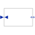

InverseBlockConstraintsConstruct inverse model by requiring that two inputs and two outputs are identical |

|
Information
This information is part of the Modelica Standard Library maintained by the Modelica Association.
Exchange input and output signals of a block, i.e., the previous block inputs become block outputs and the previous block outputs become block inputs. This block is used to construct inverse models. Its usage is demonstrated in example: Modelica.Blocks.Examples.InverseModel.
Note, if a block shall be inverted that has several input and output blocks, then this can be easily achieved by using a vector of InverseBlockConstraints instances:
InverseBlockConstraint invert[3]; // Block to be inverted has 3 input signals
Connectors (4)
| u1 |
Type: RealInput Description: Input signal 1 (u1 = u2) |
|
|---|---|---|
| u2 |
Type: RealInput Description: Input signal 2 (u1 = u2) |
|
| y1 |
Type: RealOutput Description: Output signal 1 (y1 = y2) |
|
| y2 |
Type: RealOutput Description: Output signal 2 (y1 = y2) |
Used in Examples (1)
|
Modelica.Blocks.Examples Demonstrates the construction of an inverse model |